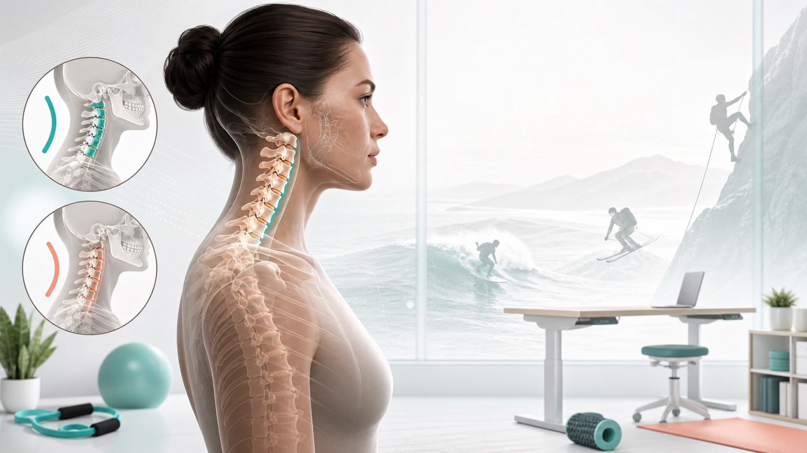

核心理解
曲度重要，但症状更重要。
“颈椎反弓”通常指颈椎曲线反向，“颈椎生理曲度变直”通常指原有前凸减小。影像报告本身不能单独证明疼痛来源，功能、神经体征、睡眠、工作负荷和运动暴露都要一起看。
症状地图
手麻是线索，不是诊断。
颈椎反弓或曲度变直真正需要认真对待，往往是它同时出现神经根或脊髓相关症状：手臂放射痛、麻木刺痛、无力、手变笨、走路不稳等。
手指分布指南
哪种神经模式更像你的手麻？
不同模式会重叠，也可能出现“双重卡压”。这张表适合作为和医生、康复师讨论体格检查、影像和肌电/神经传导检查的线索。
| 来源 | 常见麻木区域 | 额外线索 |
|---|
保守治疗
非急症情况下的实用康复地图。
更稳妥的框架是渐进暴露：先降低症状敏感度，再恢复可耐受活动度，建立肩胛和胸椎力量，最后用负荷规则回到运动。
动作指南
先看站内训练说明，再把 YouTube 当作动作参考。
每张卡片先说明适合谁、怎么尝试、何时停止。YouTube 用来辅助看动作，不让网站变成单纯跳转页。
运动关系
冲浪、滑雪和攀岩会改变颈部负荷。
运动很少能简单说成“好”或“坏”。关键是颈部姿势、持续时间、冲击风险，以及接下来 24 小时内症状如何反应。
深度专题
两个主题值得单独成页。
这些静态专题页把手指麻木鉴别和运动负荷回归拆开讲，方便读者深入阅读，也更适合搜索引擎理解。
常见问题
自我练习前，先看保守答案。
这些短问答总结本站的谨慎立场，并把读者引回上方更深入的内容。
参考来源
这个原型的资料基础。
网站应保留明显审校日期，引用临床级资料，并避免承诺“运动一定能恢复曲度”。